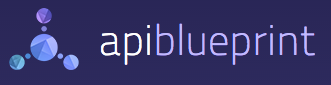

Kin Lane
API Evangelist
API Service Descriptions
API Strategy & Practice Amsterdam - March, 2014
Web Service Description Language
(WSDL)
Web Application Description Language
(WADL)
|
|




(Hypermedia)
The End
By Kin Lane (@kinlane)